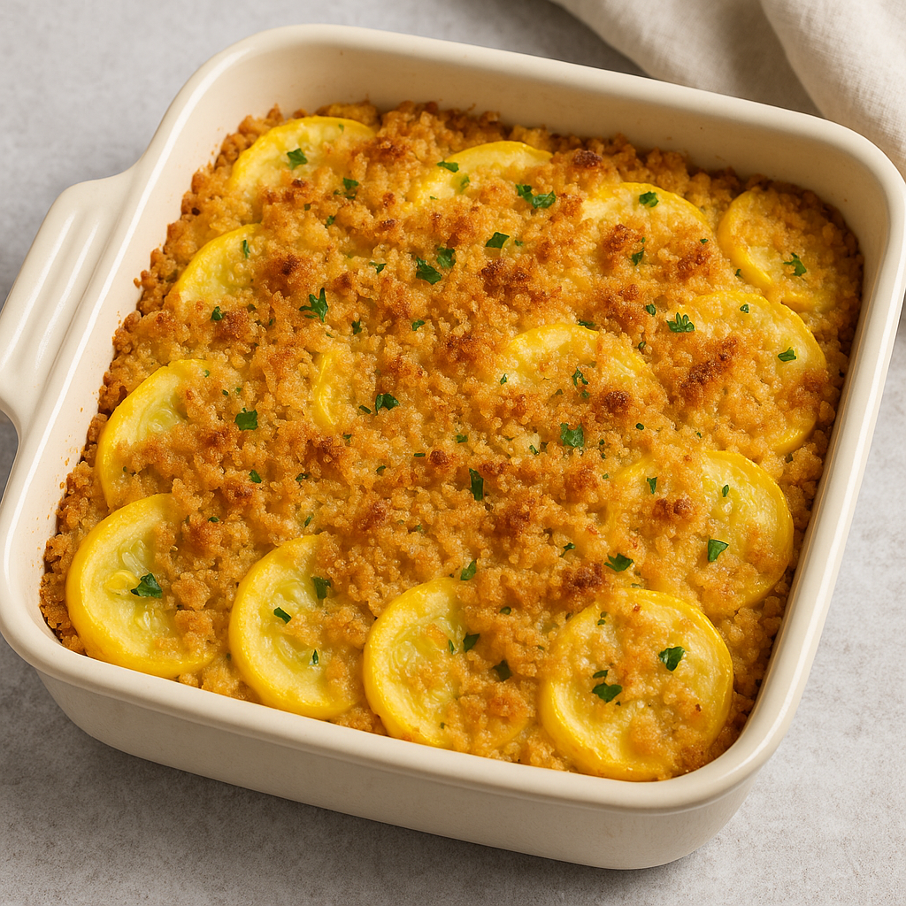

Home
Squash Casserole

The YUMMIEST squash casserole you've ever had!
Ingredients
- 4 cups sliced yellow squash
- ½ cup chopped onion
- ¼ cup water, or more as needed
- 35 buttery round crackers, crushed
- 1 cup shredded Cheddar cheese
- 2 large eggs, beaten
- ¾ cup milk
- ¼ cup butter, melted
- 1 teaspoon salt
- ground black pepper to taste
- 2 tablespoons butter
Steps:
- Gather all ingredients. Preheat the oven to 400 degrees F (200 degrees C). Lightly grease a 9x13-inch casserole dish; set aside.
- Place squash, onion, and water in a large skillet over medium heat. Cover and cook until squash is tender, about 5 minutes. Drain well and transfer to a large bowl.
- Mix cracker crumbs and cheese together in a separate bowl. Stir half of the cracker mixture into cooked squash mixture.
- Mix eggs and milk together in a small bowl, then add to squash mixture; stir in 1/4 cup melted butter, and season with salt and pepper. Spread mixture into the prepared baking dish.
- Sprinkle with remaining cracker mixture, and dot with 2 tablespoons butter.
- Bake in the preheated oven until golden brown on top and set, about 25 minutes.
- Serve hot and enjoy!